Inside the Superfan Experience
The App Gallery showcases the key features and experiences available in the Matchday Superfan platform. Each section highlights how fans can interact, express passion, and connect with their favourite teams, players, and communities in engaging and innovative ways.
Fanbot
Fanbot is an interactive text-to-speech feature designed to actively engage fans through live, voice-driven quizzes and challenges. Instead of simply reading questions on screen, Fanbot speaks directly to users, creating a more immersive and personal matchday experience that feels like a real conversation rather than a standard quiz.

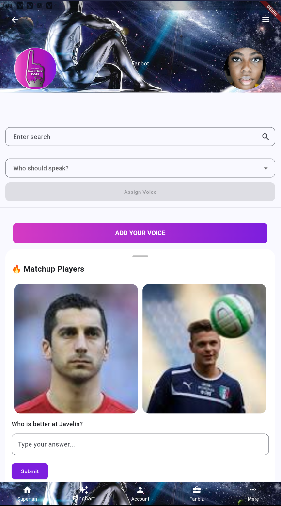
Fanbot Fanhub
Fanbot dynamically presents two randomly selected players and asks comparison-based questions that challenge users to evaluate performance, style, impact, and legacy. As fans respond, Fanbot adapts the flow of questions, turning simple comparisons into interactive debates that test knowledge, passion, and fan instincts in real time.
Fanbot Fanhub Matchup
Fanbot introduces head-to-head player matchups by selecting two players at random and guiding fans through a series of thought-provoking questions. These comparisons encourage users to weigh strengths, playing styles, influence on the game, and overall contribution, transforming each interaction into a dynamic experience that measures fan insight, loyalty, and football intelligence.
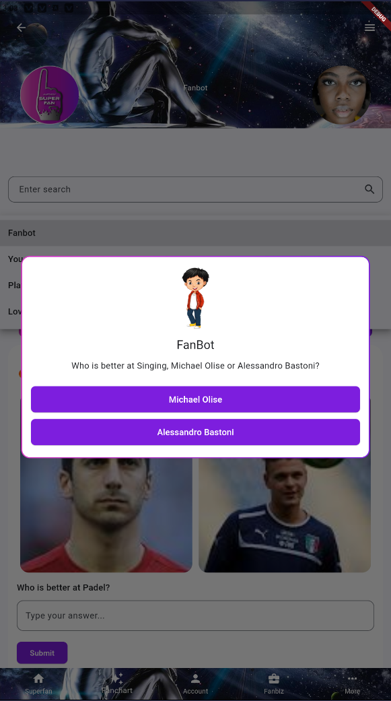
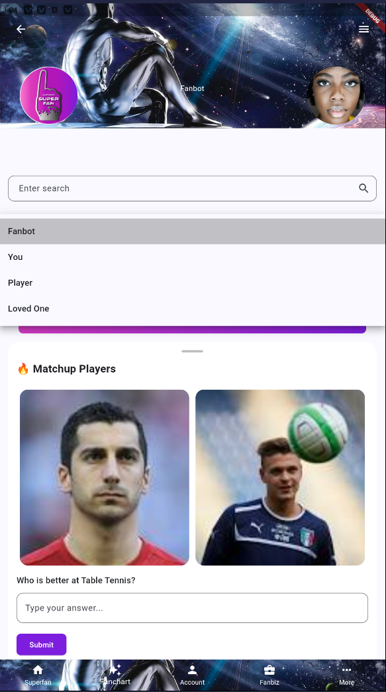
Fanbot Voices
Using advanced voice-cloning technology, fans can choose who Fanbot speaks as — whether it is their own voice, a loved one's voice, or a default Fanbot voice. This personalisation adds emotional depth and familiarity, making each interaction unique and far more engaging than traditional fan content.
Matchup Types
Matchup Types allow fans to create and share comparison-based posts that spark discussion, debate, and engagement across the community. These matchups let users explore different aspects of sport, culture, and fandom by placing two or more items side by side and inviting others to react and vote.
The platform supports five core matchup formats: Image matchups, FanTrack, Lineup matchups, Birthday matchups, and Top 5 lists — giving fans creative freedom to express opinions and passion.


Passion Profiling
Passion Profiling allows fans to react to posts using expressive fan ratings that go beyond simple likes. Instead of a single reaction, users profile content based on emotion, energy, and value. Each post can be rated using profiles such as Feisty, Entertainer, Gold Heart, Red Heart, Informative, and Empty Heart — shaping fan identity and rankings.
Polls
Polls give fans a quick and interactive way to share opinions. Users can create a poll by posting a question along with multiple answer options, allowing other fans to vote and instantly see how opinions compare. Whether predicting match results, choosing the better player, or settling fan debates, polls encourage participation and spark conversation.
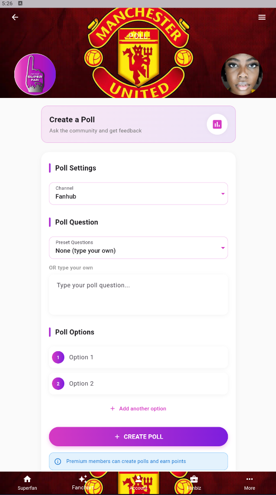
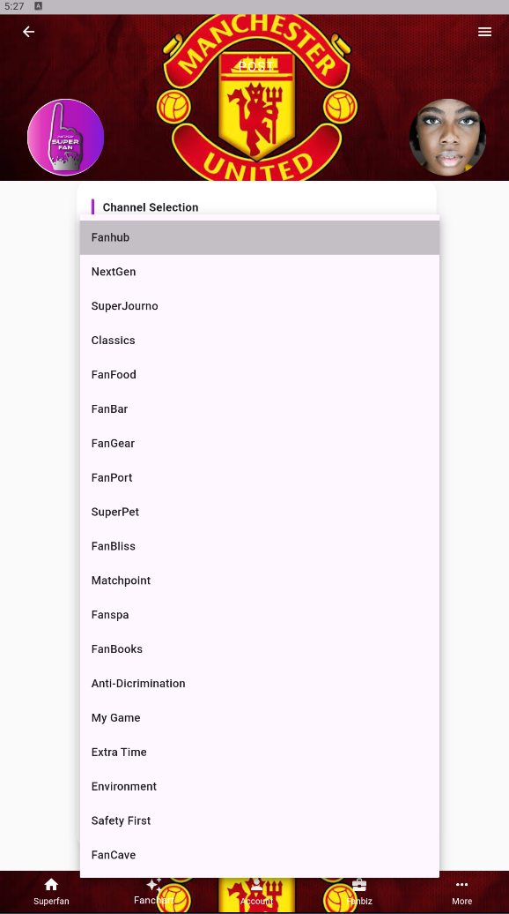
Post Channels
Post Channels define where content appears within a Fandom. When users create a post, it is published into a specific channel, allowing fans to easily discover, follow, and engage with content that matches their interests. Channels help organise discussions, media, and matchday moments.
Standard Post
Standard Posts are the most common type of content shared on the platform. This format allows users to publish media-only content such as images, GIFs, and videos, making it ideal for sharing moments, reactions, and visual highlights. Standard Posts encourage fast engagement and smooth scrolling while allowing fans to express themselves visually.
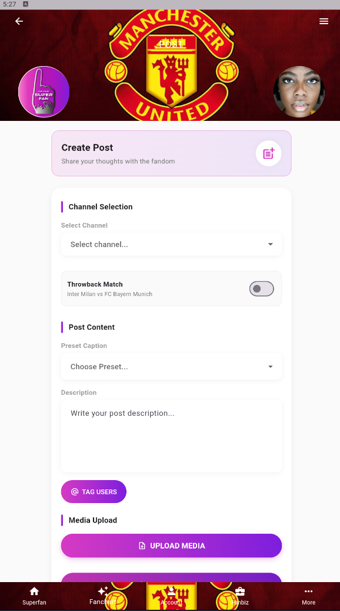
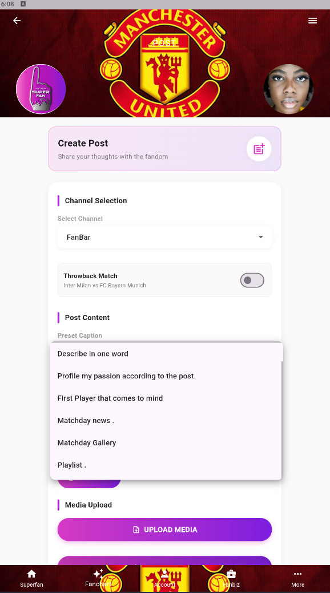
Standard Post Topics
Standard Post Topics are predefined themes that help categorise and organise content across fandoms. Created and managed by SuperFans and Fandom Captains, topics make it easier for users to filter content, discover relevant conversations, and engage with posts that align with their passions or matchday focus.
Presets
Presets are pre-written post descriptions designed to help users create engaging content with ease. They act as guided prompts for fans who may be unsure of what to write or want inspiration when sharing a post. By selecting a preset, users can quickly add context, spark conversation, and increase engagement.
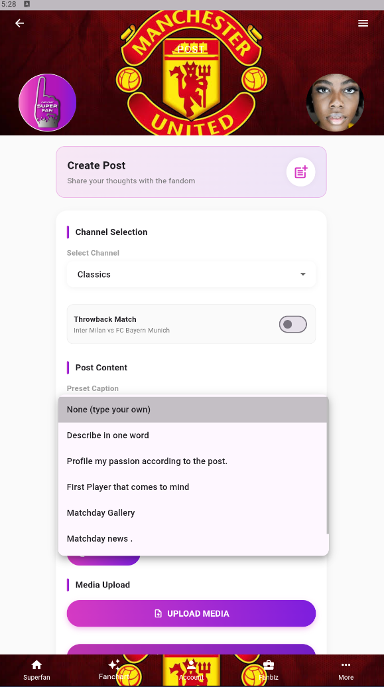

Superfan
Superfan is the main home experience of the app, bringing together a dynamic mix of posts, matchups, polls, and fan content from across the platform. It serves as the central feed where users can scroll, discover trending moments, and stay connected to everything happening within their favourite fandoms — even when not at the stadium.
Super Sub
Super Sub unlocks creative fan experiences that go beyond standard interactions, allowing users to place themselves directly into the action. One of its key features is face swap technology, which lets fans swap faces with players or loved ones to create fun, shareable, and highly personalised content. These creations turn imagination into interactive fan moments.
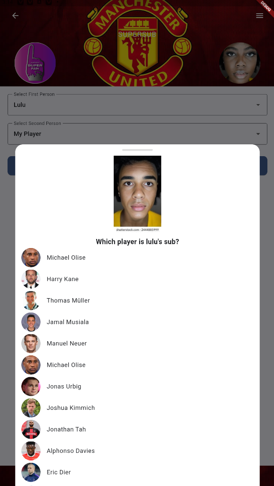

Quizzes
Quizzes give fans a fun and competitive way to test their knowledge while earning points for correct answers. Each quiz consists of multiple questions covering players, teams, matches, and general fan knowledge. Correct answers earn points that contribute to overall fan rankings and leaderboard positions, turning knowledge into rewards.
Player Rating
Player Rating allows fans to rate individual player performances during a match using a simple five-star system. This gives supporters a direct voice in evaluating how players performed. Fan ratings help shape community-driven insights, highlight standout performances, and reflect overall fan sentiment for each match.

Fanvibe
Fanvibe lets fans express how they are feeling at different stages of the matchday experience. Users can set their vibe before the match, during the match, after the final whistle, and even on non-matchdays — capturing the emotional pulse of the fanbase.

Mood
Mood allows users to express how they are feeling using simple, recognisable icons. These icons provide a quick and visual way to share emotions without needing to type, adding personality and emotional context to user activity.
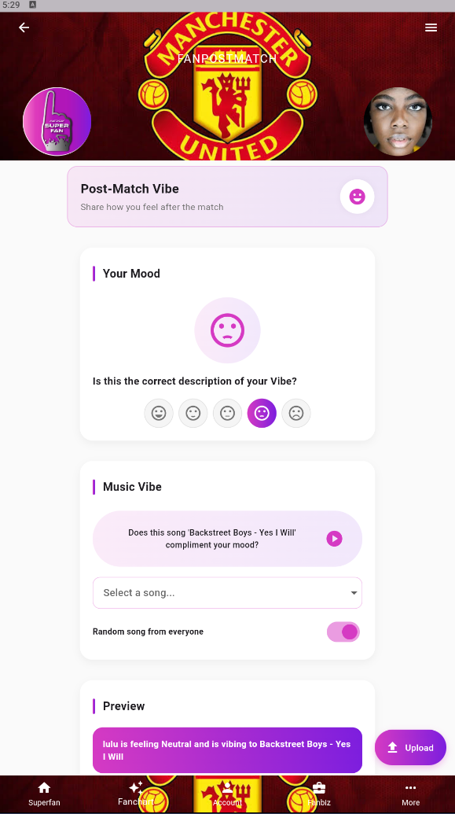
Fanboards
Fanboards display ranked lists of users based on points earned through participation across the fandom — quizzes, ratings, interactions. Fanboards also highlight users eligible for rewards.
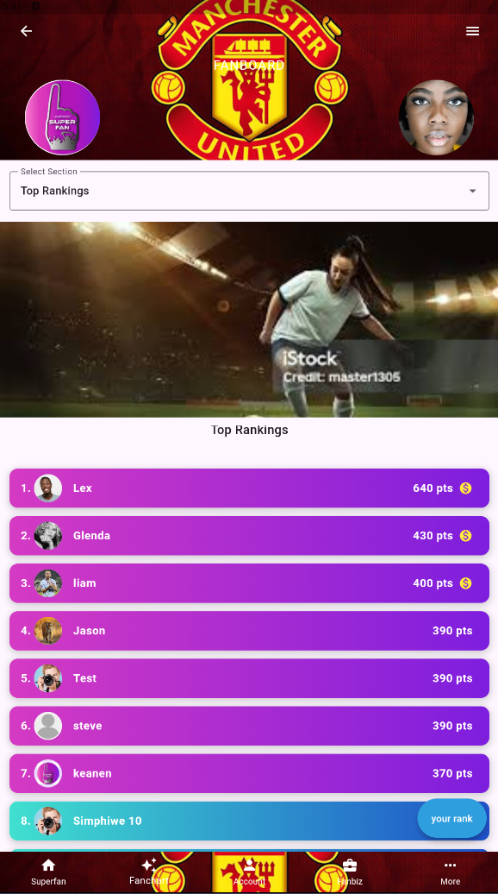
Daily Fantracks
Daily Fantracks delivers a fresh selection of music tracks every day that fans can enjoy and share within the fandom. Fans can request posts, creating a shared music experience.

Claim Options
Claim rewards via Commercial Partner, Match Sponsor, Superfan Pass, Expro Pass, NextGen, FanPro, FanExec.

Claiming from Sponsors
Exclusive offers from Shell, Pick n Pay, Total Energies, West Coast Car Hire & more.

Fan Vocals
Sing the anthem, earn points based on noise level, community voting, rewards.

Fanbiz
Market your business, build brand within fan community, reach engaged sports audience.
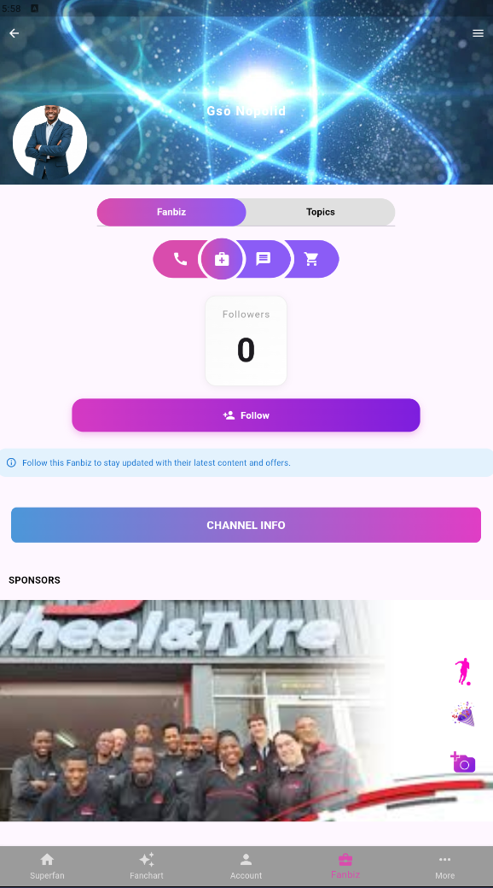
Fandom Stadium
Premium subscription, unlimited credits, exclusive content, priority access.

Fandom
Dedicated communities, custom channels, leaderboards, matchday tools.
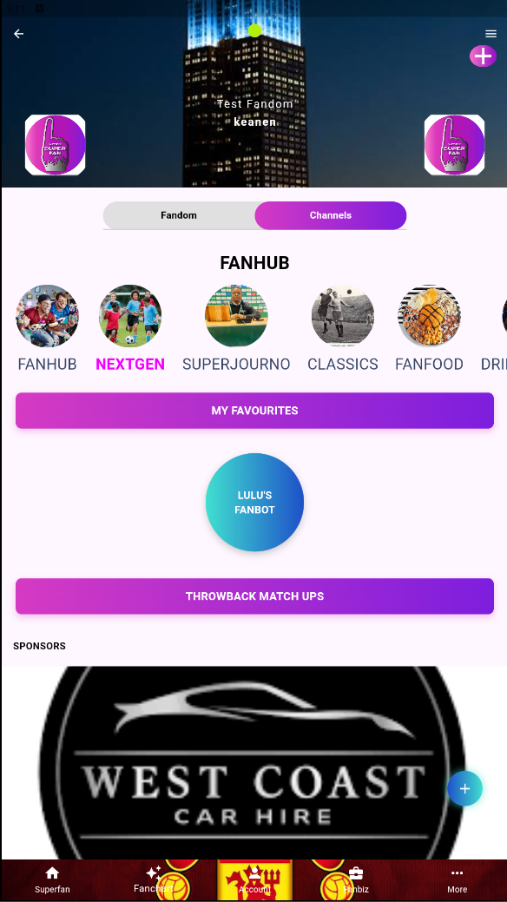
Loved Ones
Add relatives, access favourites: books, music, movies, lineups.

Matchup Modals
AI-powered content suggestions, optional prompts to inspire posts.

Rewards
Points-based program: quizzes, passion profiling, popular content, sponsor claims.

Sponsor Offers
Discount vouchers, merchandise, food & beverage, transportation deals.

Throwback Matches
Relive classic moments, tag historic matches, engage in nostalgic discussions with rich context.